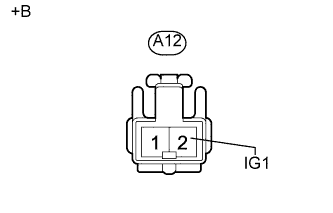
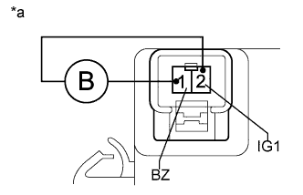

СИСТЕМА КУРСОВОЙ УСТОЙЧИВОСТИ (для моделей с гидравлическим усилителем тормозной системы) > Цепь зуммера системы противоскольжения |
| 1.ВЫПОЛНИТЕ АКТИВНУЮ ДИАГНОСТИКУ С ПОМОЩЬЮ ПОРТАТИВНОГО ДИАГНОСТИЧЕСКОГО ПРИБОРА (DSS SIGNAL BUZZER) |
Выключите зажигание.
Подсоедините портативный диагностический прибор к DLC3.
Включите зажигание (IG).
Включите портативный диагностический прибор.
Войдите в следующие меню: Chassis / ABS/VSC/TRC / Active Test.
| Информация на дисплее прибора | Испытываемое устройство | Диапазон регулирования | Замечание по диагностике |
| DSS Signal Buzzer | Зуммер системы противоскольжения | Включение / выключение зуммера | Слышен сигнал зуммера. |
Убедитесь, что зуммер системы противоскольжения включается/выключается при управлении им с портативного диагностического прибора.
| Результат | Следующий шаг |
| Зуммер не издает звукового сигнала, либо звучит непрерывно | А |
| Зуммер включается / выключается | B |
|
| ||||
| А | |
| 2.ПРОВЕРЬТЕ НАПРЯЖЕНИЕ НА КОНТАКТЕ (IG1) |
Отсоедините разъем A12 зуммера системы противоскольжения.
|  |
Измерьте напряжение в соответствии со значениями, приведенными в таблице.
| Контакты для подключения диагностического прибора | Положение переключателя | Заданные условия |
| A12-2 (IG1) - масса | Зажигание включено (IG) | 11-14 В |
| *a | Вид спереди разъема со стороны жгута проводов: (к зуммеру системы противоскольжения) |
|
| ||||
| OK | |
| 3.ПРОВЕРЬТЕ ЗУММЕР СИСТЕМЫ ПРОТИВОСКОЛЬЖЕНИЯ |
Снимите зуммер системы противоскольжения (Нажмите здесь).
|  |
Подайте напряжение аккумуляторной батареи на зуммер системы противоскольжения и убедитесь, что он подает звуковой сигнал.
| Условия измерений | Заданные условия |
| Положительный (+) вывод аккумуляторной батареи → контакт 2 (IG1) | Зуммер системы противоскольжения подает звуковой сигнал |
| Отрицательный (-) вывод аккумуляторной батареи → контакт 1 (BZ) |
| *a | Устройство с отсоединенным жгутом проводов (зуммер системы противоскольжения) |
|
| ||||
| OK | |
| 4.ПРОВЕРЬТЕ ЖГУТ ПРОВОДОВ И РАЗЪЕМ (ЗУММЕР СИСТЕМЫ ПРОТИВОСКОЛЬЖЕНИЯ – ЭБУ СИСТЕМЫ ПРОТИВОСКОЛЬЖЕНИЯ) |
Отсоедините разъем A7 ЭБУ системы противоскольжения.
Отсоедините разъем A12 зуммера системы противоскольжения.
Измерьте сопротивление в соответствии со значениями, приведенными в таблице ниже.
| Контакты для подключения диагностического прибора | Режим | Заданные условия |
| A7-30 (BZ) - A12-1 (BZ) | Всегда | Менее 1 Ом |
| A7-30 (BZ) - масса | Всегда | 10 кОм или более |
| Результат | Следующий шаг |
| NG | А |
| OK (для моделей с левосторонним рулевым управлением) | B |
| OK (для моделей с правосторонним рулевым управлением) | C |
|
| ||||
|
| ||||
| А | ||
| ||